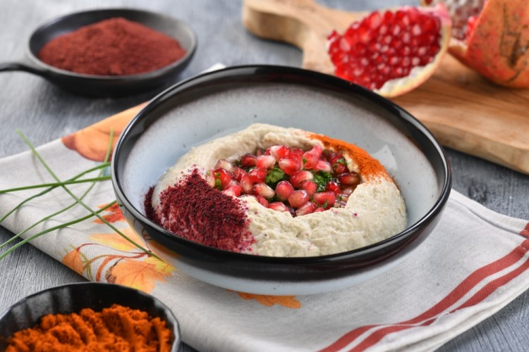
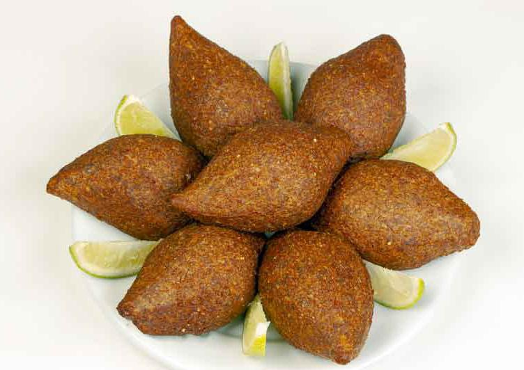

Muttabal with Eggplant
Prepare the indispensable Ramadan appetizers on the Ramadan iftar meal from my lady's kitchen. Try the mutabal, which is one of the most delicious and delicious known Levantine appetizers, and decorate your recipe with parsley and pomegranate.
Ingredients:
- Eggplant: 4 grains (medium size)
- Garlic: 3 cloves (mashed)
- Lemon juice: 3 tablespoons
- Cumin: half a teaspoon
- Paprika: half a teaspoon
- Olive oil: half a cup
- Parsley: 2 tablespoons (chopped)
- Salt: a pinch
- Black pepper: a pinch
Preparation:
- Roast the eggplant in the oven for a period ranging between 30-40 minutes, depending on the size, until it is tender, then put it in a bowl and leave it aside until it cools down.
- Cut the eggplant in half, then peel it and put it in a colander, and leave it for 15 minutes to get rid of the liquid.
- In the bowl of an electric mixer, mix the eggplant with garlic, tahini, lemon juice, cumin, paprika, salt, and black pepper.
- Gently add the olive oil, mixing until combined.
- Add the parsley, and mix for a few seconds.
- Put the eggplant spiced in a serving dish, garnish with parsley, sweet pepper, and pomegranate seeds, and serve.
Puff Pastry Cheese Pies
Puff pastry chips are quick to prepare, crispy, and have a variety of sweet and salty fillings. Try them with cheese filling and serve them on a hot Ramadan iftar meal.
Ingredients:
- Puff pastry dough: 300 grams
- Mozzarella: 1 cup (grated)
- Feta cheese: 1 and a half cups
- Eggs: 2 (beaten)
- Thyme: 5 tablespoons (crushed)
- Black pepper: a pinch
- Love of blessing: as desired
Preparation:
- Spread the puff pastry dough on a work surface, then cut it into equal triangles.
- In a bowl, mix feta cheese, mozzarella cheese, black pepper, and thyme.
- Spread a little of the cheese filling on the edge of each dough, then roll it into a triangle.
- Prepare an oven tray and line it with butter paper.
- Arrange the pies on the tray and brush them with beaten eggs.
- Sprinkle black cumin on the surface of the pies.
- Preheat the oven to 180 degrees Celsius.
- Bake the pies in the oven until they are browned and cooked, then serve them.

Iraqi Kibbeh
Learn from my lady's kitchen how to make Iraqi Kibbeh. Try it and serve it as a Ramadan appetizer dish, alongside other Ramadan dishes, and enjoy the amazing and delicious taste.
Ingredients:
- Onion: 1 (chopped)
- Minced meat: 1/4 kilo
- Vegetable oil: 1 tablespoon
- Salt: 1 teaspoon
- Mixed spices: 1 teaspoon
- Cumin: 1 teaspoon
- Rice: 1 cup (boiled yellow)
- Potatoes: 1 (boiled)
Preparation:
- In a bowl, mix the boiled rice and potatoes until you get a cohesive paste.
- In a non-stick pan, put the chopped onions, minced meat, vegetable oil, salt, mixed spices, and cumin. Stir well until the meat's water dries up.
- Shape the dough into equal balls and stuff them with the meat filling.
- Preheat the oven to 180 degrees Celsius.
- Prepare an oven tray, grease it with oil, then spread the kibbeh balls in it without stacking them, leaving space between each ball.
- Bake the kibbeh in the oven until they are cooked, flipping them from time to time.
- Serve the hot kibbeh as a delicious Ramadan appetizer dish.